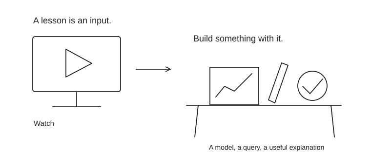

Courses and practical resources
Choose the resource that fixes your next gap. You do not need another introductory ML course if you already build models at work.

| Skill | Resource | Access | Practice task |
|---|---|---|---|
| Finance foundations | OpenStax finance | Free | Read the relevant section, complete its questions, then connect it to an annual report. |
| Market intuition | Robert Shiller · Financial Markets (Yale, 2011) | Free | Use selected lectures to understand institutions and risk. Historical examples and rules need current verification. |
| Mathematical finance | Andrew Lo · Finance Theory I (MIT, 2008) | Free | Prioritize present value, fixed income, portfolio theory and capital budgeting. Use the problem sets and solutions. |
| Valuation | Damodaran’s online valuation class | Free | Watch one short lesson, complete its post-class test, then update your company model. |
| Indian markets | Zerodha Varsity | Free | Start with markets, fundamental analysis and risk. Useful context; not a substitute for the CFA syllabus. |
| SQL | PostgreSQL window-function tutorial | Free | Calculate a rolling balance, cohort retention and customer ranking; explain grain and duplicate risks. |
| Business intelligence | Microsoft Learn · Power BI | Training free; software/features may vary | Build a finance report with a clear decision. Modeling and reconciliation matter more than visual decoration. |
| Data communication | Storytelling with Data | Mixed free / paid | Redesign one chart; give it a conclusion title and remove unrelated metrics. |
| Optional exam support | Kaplan Schweser | Paid; verify 2027 package | Consider structured notes or extra mocks only after identifying a gap in your official preparation. |
| Optional exam support | Mark Meldrum | Paid; check coverage | Choose lectures if explanation is your bottleneck. Avoid subscribing to several overlapping providers. |
Three routes through the material
Finance analytics: statements → Excel/SQL → dashboard → recommendation. Investment analytics: valuation → portfolio concepts → attribution → research memo. Quant risk: instruments → probability and model validation → risk measures → model review.
Use the 12-week plan to schedule the work. Use sample papers to check whether it stuck.